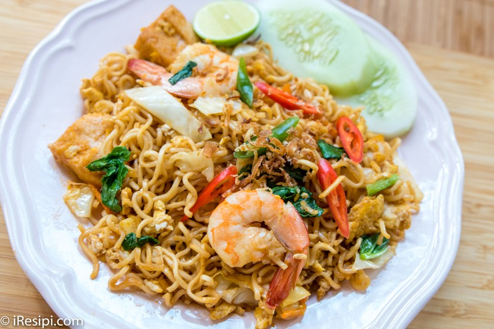

Maggi Goreng

Description
Fried Maggi is a simple and quick to be prepared if you're lazy to go to Mamak Restaurant. We'll be using Curry Maggi Noodle. In this recipe, I am going to add vegetables according to what I have in my refrigerator but be free to add according to your own preferences.
Ingredients
- 1 packet of Curry Maggi Noodle with it's paste
- 1 crushed garlic
- 1 egg
- 2-3 prawns
- A piece of curdled soybean milk, sliced thin
- Cabbage
- Mustard
- Chilli
- Chilli sauce
- Soy sauce
- Thin lime
Steps
- Stew the semi-cooked maggi, make sure that it is not fluffy and then toss.
- Heat oil until the sliced garlic turned yellowish.
- Break eggs and spread the maggi paste onto the egg. Mixed it well and add prawns.
- Add maggi, fried curdled soybean milk, cabbage, mustard and chillies.
- Add all the remaining maggi paste, add some soy sauce and chilli sauce until it is fully flavour. Mixed it all well.
- Finished and served with thin sliced lime.